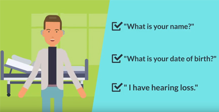

Guide for Effective Communication in Health Care
As part of HLAA’s program for Communication Access in Health Care Settings, The Guide for Effective Communication in Health Care was created for patients, families, caregivers, all members of the health care team, administrators, and support staff. It provides information, resources, and tools to help improve communication in medical settings. This health care guide can help hospitals, facilities, and private offices follow federal, state and local laws, regulations, and health care standards, and allow patients to ask for and get the services they need.
Technology for Patients Video
Going to the hospital can be stressful, especially if you have hearing loss. Tune in to this video to learn about communication strategies and technology that will make your trip to the hospital much easier. The video is produced by the Hearing Loss Association of America and made possible by a grant from the Consumer Technology Association Foundation.
See more videos on Hearing Assistive Technology.
What is Effective Communication?
When information between two or more people is shared or exchanged and each person is able to fully understand and make decisions based on that information, effective communication has been accomplished. This process often requires going back and forth with questions and answers until everyone has a clear understanding.
Patients must be able to communicate with their doctors, nurses, and other members of their health care team. Providers must communicate clearly with their patients so they can diagnose, care for, and treat them in the best and safest way possible. However, communication between patients and providers is not always effective. To help remedy the situation, it is strongly recommended that patients and providers use the Communication Access Plan (CAP) and include it in the patient’s medical record.
We want your feedback
Please share your experiences using the CAP with us by emailing HealthcareAccess1@gmail.com.
Communication Access Plan (CAP)
Download the Complete Guide
Includes CAP plus both Patient and Provider Guides
Patients
- A Guide for Effective Communication in Health Care
- Communication Aids & Services
- Communication in the Emergency Department
- Communication in Inpatient Settings
- Communication in Outpatient Settings
- Communication During Tests & Procedures
- Rights & Responsibilities
- Complete Patient Guide
- Captioning for Telehealth
Providers
- A Guide for Effective Communication in Health Care
- Facts About Hearing Loss
- Rights & Responsibilities
- Communicating with Hard-of-Hearing and Deaf Patients
- Communication Aids & Services
- Communication in the Emergency Department
- Communication in Inpatient Settings
- Communication in Outpatient Settings
- Communication During Tests & Procedures
- Complete Provider Guide
Introduction for Patients
It is important for your health and well-being that you communicate clearly with your doctors and staff. Asking questions can avoid mistakes and misunderstandings and help you to get the safest and best care possible. The more you understand about your own health, the better decisions you and your health care team can make. This is known as effective communication.
Effective communication is when information between two or more people is shared or exchanged and each person is able to fully understand and make decisions based on that information. This is often a process that requires going back and forth with questions and answers until everyone has a clear understanding.
This Guide will help you to understand:
- What is needed for effective communication?
- What is a Communication Access Plan (CAP)? Why is it important?
How should it be used? - What are the “auxiliary aids and services” that may help you to communicate?
- What are your legal rights to effective communication?
- How to get what you need for:
- Emergency Department visits
- Inpatient hospital stays
- Outpatient appointments
- Tests and procedures
Communication Access Plan (CAP) Instructions for Patients and Providers
Patient Instructions
What Is a Communication Access Plan?
A Communication Access Plan (CAP) is a one-page form to let your doctors and health care team know about your hearing status and the communication aids and services needed.
Why Is the CAP Important?
Communicating clearly with your health care team helps you get the best and safest care possible. When you are part of and understand all discussions about your health, you will make better decisions.
How Do I Use the CAP?
- Bring a copy of your CAP to your appointment.
- Review the CAP with your doctor and health care team to be sure you have the aids and services you need.
- Ask staff to make sure your CAP is added to the Electronic Medical Record (EMR) or paper chart.
Provider Instructions
What Is a Communication Access Plan?
A Communication Access Plan (CAP) is a one-page form that will document your patient’s hearing status and communication needs. A completed CAP can help ensure that you and your patient communicate effectively using the appropriate aids and services.
Why Is the CAP important?
Delivering the best and safest care is only possible when patients can fully participate in and understand all discussions about their health and well-being and make informed decisions.
How Do I Use the CAP?
- Ask your patient to fill out a CAP.
- Review the CAP with your patient.
- Identify what aids and services you will need to provide.
- Include the CAP in the Electronic Medical Record or paper chart and inform all referrals that a CAP exists.
Communication Aids and Services - Patients
Making sure you have the aids and services you need for effective communication is the responsibility of the hospital, institution, facility, or practice. You and your family cannot be asked to pay for aids or services.
Effective communication is when information between two or more people is shared or exchanged and each person is able to fully understand and make decisions based on that information. This is often a process that requires going back and forth with questions and answers until everyone has a clear understanding.
Assistive Listening Devices (ALDs)
An ALD will make the voice of the people you are speaking with louder when they speak into a small microphone. If you have a pocket talker, FM system or other ALD, bring it with you to your appointment. If you do not have an ALD, ask staff if a pocket talker is available. (See Pocket Talker below)
Amplified Phones
An amplified phone will make the voice of the person you are speaking with louder.
Captioned Phones
If you are using a captioned phone, you can read what the person you are speaking with is saying on the phone screen. Captioning services are also available on some smartphones.
CART (Communication Access Realtime Translation)
A CART captionist will type the discussion you have with your doctor or staff so you can read it on a laptop, tablet, or smartphone. CART can also be used remotely, meaning that the captionist is at another location using the internet to connect.
Dry Erase Board (or Whiteboard)
A small board that can be written on with an erasable marker.
Hearing Loop
If your hearing aid or cochlear implant has a telecoil, and the room you are in has a special wire called a loop, you will be able hear and understand more clearly.
Pen and Paper
Pen and paper may be helpful for very short communications or as a back-up if there are no devices or equipment that can be used.
Pocket Talker
A pocket talker is a small assistive device with a microphone, amplifier, earbuds or headset and a neckloop for hearing aids that have telecoils. It makes the speaker’s voice louder to help you hear better. Many hospitals have pocket talkers for you to use.
Relay Calls
You can call a specially trained relay operator who will type what a person is saying while you read it on the phone screen.
Tablet, Computer, Smartphone
Ask your doctor’s office or hospital staff if they have an iPad or other tablet that can be used for typing discussions. If not, you might want to bring your own. You may also be able to use the voice activation option on a smartphone.
UbiDuo
Using two separate screens with keyboards, you and the doctor or staff member can face each other while they type and you read what they are saying on the screen.
Interpreting Services
- The hospital, facility, or practice is responsible for setting up and paying for interpreting services.
- The hospital, facility, or practice cannot ask or require you to bring your own interpreter.
- The hospital, facility, or practice should not ask your friends or family to help you and your health care team communicate. However, in case of an emergency, family or friends may be asked to help.
American Sign Language Interpreter
If you or a family member communicate in American Sign Language, you can ask for an ASL/English interpreter. An ASL interpreter can help you and your health care team communicate. If you need interpreting services, ask for nationally certified interpreters.
Certified Deaf Interpreter
A CDI is a deaf person who has been nationally certified to provide interpreting services to deaf people who may not be able to communicate well in American Sign Language. If you or a family member use sign language from another country, or have difficulties communicating in sign language, you may ask for a CDI. A CDI typically works with a hearing ASL interpreter.
Low-Vision Interpreting
If you or a family member have low vision, you may need the sign language interpreter to stand or sit very close to you so you can see the signs.
Oral Interpreter
If you or a family member are very good speechreaders, you may want to request an oral interpreter. An oral interpreter repeats what the speaker is saying, using different words that are easier to speechread. Oral interpreters and sign language interpreters do not provide the same service. Be sure to let the hospital or facility staff know which service you need.
Tactile Interpreting
If you or a family member use sign language and are DeafBlind, you can request a tactile interpreter. A tactile interpreter has a DeafBlind person put their hands lightly over theirs so signs and fingerspelling can be felt.
Video Remote Interpreting (VRI)
VRI is an interpreting service with the interpreter, in a different location. However, you may still need an on-site interpreter in medical and mental health settings. See National Association for the Deaf and VRI. There are strict guidelines for the use of VRI services which hospitals and institutions must follow.
Note: The Americans with Disabilities Act (ADA) refers to communication aids and services as Auxiliary Aids and Services.
Communication in the Emergency Department - Patients
Emergency Department (ED) visits can be scary. The ED can also be noisy and busy, making communication even more difficult than usual. It is very important that you and your nurses and doctors understand each other.
A Communication Access Plan (CAP) will help you get the services you need so you can understand what is being said.
By law, the hospital must give services to you, your family, and your caregivers to help with communication so you can understand your treatment options, make good decisions, and receive the best and safest care possible. You cannot be asked to pay for aids or services used during your Emergency Department visit.
Triage/Registration
- Tell staff you are hard of hearing or deaf.
- Ask staff to look directly at you when speaking.
- Ask for the aids and services you need so you will understand all information.
- Ask that your CAP be included in your Electronic Medical Record or paper chart.
- Ask for a copy of the questions that will be asked during registration.
- Remind staff you will not hear your name when it is called. Ask how they will let you know it is time for you to be seen:
- Vibrating pager
- Staff person will come to you
- Ask that a sticker with a symbol showing you are hard of hearing or deaf be placed on your wristband or ask if a second wristband can be used to show your hearing status.
- Ask questions and make sure you get them all answered.
- Repeat back information to make sure you have understood.
- Ask a family member, caregiver, or friend to help if you cannot manage communication even with aids and services.
Treatment Area/Bedside
- Ask to have a sign posted over your bed that shows you are hard of hearing or deaf.
- Ask to wear your hearing aid(s) or cochlear implant(s) while in the Emergency Department. If this is not possible, ask that device(s) be put into a container with your name on it or given to a family member or friend.
- Tell staff the best way to get your attention.
- Ask staff their name and role (nurse, doctor, etc.) or ask to see their ID badge.
- Ask for printed or clearly written information whenever possible.
Tests, Procedures, Surgery
- Ask your doctor if the anesthesia (medicine to put you to sleep or numb part of your body) or other medicines can make your hearing, balance, or tinnitus worse.
- Ask for a printed or written step-by-step explanation of what is going to be done.
- Ask all questions before staff put on their surgical masks.
- If you will be awake during a procedure, discuss with staff how they will communicate with you.
- Examples:
-
- Dry erase board (whiteboard)
- Turning lights on and off
- Gently tapping you on the shoulder
- If you have a cochlear implant, ask your doctor if it is safe to have an MRI.
- Before having an MRI, ask for earplugs, a headset, or both to protect your hearing.
Leaving the Emergency Department (Discharge and Follow-up)
- Be sure to get all information and instructions in writing before you leave the Emergency Department.
Communication in Inpatient Settings - Patients
If you are a person with hearing loss, your inpatient stay in a hospital or other facility can be especially stressful. Planning ahead by filling out a Communication Access Plan (CAP) can help you to get the aids and services you need. Hospitals or other health care facilities cannot ask you to pay for aids and services you use during your stay.
Hospitals and health care facilities must follow laws that protect your rights to receive all information in a way you can understand. Clear communication helps avoid misunder-standings, keeps you safe, and helps you make better decisions.
Pre-Admission: Planning Your Stay at a Hospital or Facility
- Contact the Patient Representative or Patient Advocate and ask which department or staff member is responsible for arranging the services you need. Give them a copy of your CAP.
- Ask what aids and services the hospital or facility will have for you.
- Have staff give you information in writing about what to expect during your stay.
A Planned Hospital Stay
- Bring your pre-admission paperwork along with your CAP.
- Bring your assistive listening devices (ALDs), batteries, and a container with your name on it.
- Bring stickers for your wristband with a symbol showing you are hard of hearing or deaf.
- Bring pen and paper.
- You may want to print information from the Provider section of this Guide to give to your doctors and staff.
Admission from the Emergency Department
- Make sure patient escort/transport know about your hearing status and how to communicate with you when you are being transported for tests, to your room, or to another facility.
- Make sure you have all your personal communication aids with you
- (ALDs, batteries, hearing aids, etc.).
During Your Stay in the Hospital/Facility
- Give a copy of your CAP to the department or staff member who will make sure you get the communication aids and services you need. Ask to have the CAP added to your Electronic Medical Record or paper chart.
- Let staff know you expect to be included in all discussions and decisions about your medical care.
- If you are unable to get the help you need, ask to speak with a Patient Representative or Patient Advocate.
- Check to see that the following are in place:
- Sign over bed stating you are hard of hearing or deaf, or written on the whiteboard in your room
- Wristband with universal “hearing loss” sticker or ask for a second wristband showing your hearing status
- Captioned phone
- Visual alerts in case of an emergency; other devices for alerts as needed
- Instructions on how to set up captions on the TV and patient education videos
- Let staff know you will not be able to hear over an intercom.
- Tell staff the best way to get your attention before they speak with you.
Some options are:
-
-
- Turn lights on and off
- Stand a few feet away and wave their hand
- Tap you gently on the shoulder
-
- Make sure ALDs, cochlear implants, hearing aids, and other belongings are kept safe.
Leaving the Hospital (Discharge)
- Get all information and discharge instructions in writing before you leave the facility.
Communication in Outpatient Settings - Patients
When scheduling outpatient appointments, let staff know what aids and services you will need so you, your doctor, and your health care team can communicate clearly. Services and aids you use for your visit, will be at no cost to you, your family, or your caregiver. A Communication Access Plan (CAP) should be filled out and become part of your medical record. This will save time and help you feel less stressed and frustrated. It should make communication easier and make your visits go more smoothly.
Scheduling Appointments
Online Scheduling
- Check to see if your doctor’s office has online scheduling through their website or a patient portal.
- Check to see if you can email or fax your CAP to the doctor’s office before your appointment.
Phone Scheduling
- Tell the receptionist you are hard of hearing or deaf.
- When using a captioned phone or relay operator, let the receptionist know your call may take longer.
- Tell the receptionist your communication needs for the appointment. If possible, fax or email a copy of your CAP.
- Ask for the name of the office manager in case you need help getting the services you need.
- Ask if you can fill out medical forms online before your appointment.
- Repeat back the date and time of your appointment.
- Ask that an email confirmation be sent.
- Ask for the text number or email address you should use if you will be late.
- You may want to share information from the Provider section of this Guide with your doctors and staff.
Managing Appointments
When You Arrive
- Remind staff you are hard of hearing or deaf.
- Give them a copy of your CAP.
- Ask that a sticker be put on your paper chart showing that you are hard of hearing or deaf.
- Discuss your CAP with staff and decide what aids and services you will use for your appointment.
- Ask if staff will use a vibrating pager or come to where you are sitting when it is time for you to be seen.
Your Visit with Your Doctor or Other Health Care Staff
- Tell your doctor that you have hearing loss and give staff your CAP.
- You may want to print information from the Provider section of this Guide to give to your doctors and staff.
- Ask questions and make sure you get them all answered.
- Repeat back information to make sure you understood.
- Ask if any new medicine you are given might make your hearing, balance, or tinnitus worse (ototoxic reaction).
- Before having an MRI, if you have a cochlear implant (CI), be sure to tell your doctor.
- Ask that all information about your treatment plan and medicines be given to you in writing.
- Ask for the name, phone or text number, or email address of someone to contact if you have questions about your care.
Communication During Tests and Procedures - Patients
- Remind all staff that you are hard of hearing or deaf.
- Give staff a copy of your Communication Access Plan (CAP) and ask to have it added to your Electronic Medical Record or paper chart.
- Bring stickers with a symbol showing you are hard of hearing or deaf to put on your paper chart and wristband.
- Ask to wear your hearing aid(s) or cochlear implant(s) until tests or procedures begin. If this is not possible, ask staff to put the devices in a container with your name on it.
- Ask for a written explanation of what the doctor, nurse, or technician will be doing.
- Make sure you get answers to all your questions before staff put on their surgical masks.
- Ask your doctor if the anesthesia (medicine to put you to sleep or numb part of your body) can make your hearing, balance, or tinnitus worse.
Communicating in Radiology
X-ray / CT Scan / MRI
- If you have a cochlear implant(s), ask your doctor if you can have an MRI.
- Ask your doctor if there will be a staff person in the room to give you instructions during the test. If so, talk to staff about how they will communicate with you.
Some options are:
-
-
- Write on a dry erase board (whiteboard)
- Turn lights on and off
- Gently tap you on the shoulder
- Ask for earplugs and/or a headset to protect your ears during an MRI.
- When your test or procedure is finished, ask staff how you will get your results using the CAP to discuss options.
-
Patient Rights and Responsibilities
Your Rights
Every patient has rights. federal, state, local laws, and guidelines protect you if you are hard of hearing or deaf to make sure you receive information in a way you can understand. This is called effective communication.
Effective communication is when information between two or more people is shared or exchanged and each person is able to fully understand and make decisions based on that information. This is often a process that requires going back and forth with questions and answers until everyone has a clear understanding.
Although medical staff will make the final decisions as to what services they will provide, they need to include you in the discussion. You should work together to make sure your communication needs are met.
Your family and caregivers also have the same rights to aids and services so that they can be included in your care and treatment (Department of Justice, 2005).
Americans with Disabilities Act (ADA)
Title III, says that all health care providers (including private doctor and dentist offices) must provide aids and services to hard of hearing, deaf, and DeafBlind patients so they can communicate clearly. For more information, see ADA.
Section 1557 of the Affordable Care Act
Section 1557 is the nondiscrimination provision of the Affordable Care Act (ACA). The law prohibits discrimination on the basis of race, color, national origin, sex, age, or disability in certain health programs or activities.
The Joint Commission (TJC)
TJC is a nonprofit organization that makes sure hospitals have high standards of care for patients, their families, and caregivers. Hospitals are expected to follow TJC guidelines. This link will show you what hospitals need to do to provide access to effective communication: A Roadmap for Hospitals. TJC “Roadmap”.
Centers for Medicare and Medicaid (CMS)
CMS is part of the Department of Health and Human Services. As a federal agency, CMS has many programs that help people get low-cost health care services.
Your Responsibilities
Have a Plan
If you have a plan before you see your doctor, you will feel more comfortable and less anxious. Review this Guide to make sure you know what to bring to your appointments and how to get the services you need.
Be Willing to Share
It is important to tell your doctors and staff that you are hard of hearing or deaf. You may not always feel comfortable doing this, but it can help you get the best possible care and keep you safe.
Try to be Patient
It will take time for your health care team to understand your communication needs. You may feel frustrated and even angry at times. Take a deep breath and continue to educate them until you get what you need.
Be Sure to Participate
You are the expert in what it is like to be hard of hearing or deaf and what you need to communicate. Your health care team members are the experts in medicine and treatment. By working together, you can get the communication aids and services you need.
Filing a complaint
While hospitals, facilities, and practices have the responsibility, by law, to provide aids and services to hard of hearing and deaf patients, families, and caregivers, it is your responsibility to take action when your needs are not being met. If your rights are being violated (you are not provided the services you are legally allowed), you have the right to file a complaint.
The Joint Commission Complaint
You may also file a complaint with CMS and your state’s Department of Health.
Introduction for Health Care Providers
This Guide will help health care providers establish and maintain best practices in ensuring effective communication for hard of hearing and deaf patients, families, and caregivers. Hospital administrators, risk managers, and chief regulatory officers of hospitals, health care facilities, and private practices, and all members of the health care team, should read this Guide to ensure compliance with laws, regulations, and guidelines related to the provision of services for effective communication.
Effective communication is the process of exchanging information between two or more people and asking for clarification until all parties are able to fully understand. Effective communication results in the patient being able to make informed decisions and the health care team providing safe and responsible care.
This Guide includes information on:
- Important facts about people who are hard of hearing or deaf.
- Legal and regulatory responsibilities for hospitals and health care practices and facilities in providing access to effective communication.
- The Communication Access Plan (CAP) and how it can help providers and patients manage and ensure effective communication.
- Communication aids and services needed for effective communication.
- Information for staff working in the emergency department, inpatient settings, and outpatient settings, as well as performing tests and procedures.
Research supports that effective communication between patients, families, and their health care providers can have a significant impact on a patient’s health and well-being. Costs associated with the provision of aids and services to ensure access to communication can be mitigated by reducing:
- Length of stay
- Readmission rates
- Emergency room visits
- Unnecessary diagnostic tests
- Medication errors
Effective communication improves the quality of treatment, resulting in:
- Improved patient safety
- Informed decision making
- Treatment and medication adherence
- Increased patient satisfaction
- Better health care outcomes
The majority of people in the United States with hearing loss do not use American Sign Language (ASL) as their primary or preferred language, and yet sign language interpreting services are typically what are offered by hospitals and other health care facilities. These services do not meet the communication needs and rights of non-signing people who are hard of hearing or deaf.
Institutions and practices increase their liability by being non-compliant with federal, state, and local laws as well as standards and guidelines set forth by accrediting agencies such as The Joint Commission (TJC), Centers for Medicare and Medicaid Services (CMS), the U.S. Department of Health and Human Services (HHS), and the Office of Minority Health (OMH).
References
Institute for Healthcare Communication. (July 2011). Impact of Communication in Healthcare
Retrieved from http://healthcarecomm.org/about-us/impact-of-communication-in-healthcare/communication-in-health care/
National Association of the Deaf. Position Statement of Health Care Access for Deaf Patients
Retrieved from https://nad.org/issues/health-care/position-statement-health-care-access-deaf-patients
The Joint Commission. (2010). Advancing Effective Communication, Cultural Competence, and Patient- and Family-Centered Care: A Roadmap for Hospitals
Retrieved from http://www.jointcommission.org/assets/1/6/ARoadmapforHospitalsfinalversion727.pdf
Facts about Hearing Loss
Communication barriers compromise patients’ safety and ability to make informed decisions effecting their overall health and well-being.
Communication needs and preferences vary greatly among people who are hard of hearing or deaf. These are general guidelines; however, case-by-case assessments are required for providing patient-centered care.
Note: “Hearing loss” is a general term and often includes people who were born deaf or hard of hearing as well as those individuals who experienced hearing loss any time after birth. Many deaf and hard of hearing people who communicate primarily in a signed language, identify as being members of a community or linguistic minority, not as having a disability.
This Guide focuses mainly on the communication needs and services of non-signing hard of hearing or deaf patients, family members, or caregivers. However, the legal rights to effective communication and considerations are consistent for all.
Hearing loss is a major public health issue; it is the third most common physical condition after arthritis and heart disease. It is not only a medical condition or diagnosis; more importantly, it is a communication and psychosocial issue.
Demographics
- Approximately 48 million people report some degree of hearing loss.
- Four out of five Americans with hearing loss do not wear a hearing aid.
- 18% of adults 45-64 years old have hearing loss.
- At age 65, one out of three people has hearing loss.
- 47% of adults 75 years or older have hearing loss.
- Tinnitus (ringing in the ears) affects 50 million people in the United States.
- 30 children per 1,000 have hearing loss.
- 1 in 5 teenagers has hearing loss.
- 60% of veterans who serve in combat experience noise-induced hearing loss; hearing loss and tinnitus are the most common service-related disabilities.
- Reports indicate hearing screening in primary care is uncommon, occurring during approximately 17-30% of patient visits.
Recognizing Patients Who Are Hard of Hearing or Deaf
Patients may not always disclose they have hearing loss. This may be due to denial, stigma, or fear of being treated differently. Rather than focus on the hearing loss, it is imperative to address the communication needs of the patient.
Here are some common indications a patient may be hard of hearing or deaf:
The patient:
- Often asks for statements or questions to be repeated
- Often misunderstands conversations and information, especially in noisy or busy environments
- Has difficulty understanding when they cannot see the speaker’s face
- Turns one ear towards the person speaking or cups a hand behind an ear
- Speaks loudly
- Complains people are mumbling
- Has difficulty understanding on the telephone
Being Hard of Hearing or Deaf May:
- Compromise awareness and safety
- Increase fatigue, tension, irritability, and stress
- Decrease patient’s ability to process, retain, and act on information
- Impact other health and safety issues such as falls, cognitive decline, and dementia
- Contribute to low self-esteem
- Cause patient to feel marginalized
- Create or increase a sense of isolation
- Increase patient’s risk for depression
- Adversely affect overall quality of life
Rights and Responsibilities of Health Care Providers
Federal, state, and local laws address the communication rights of hard of hearing and deaf patients, families, and caregivers. Despite the Americans with Disabilities Act (ADA) of 1990, regulations and guidelines established by regulatory and accreditation bodies such as The Joint Commission and the Centers for Medicare and Medicaid, access to effective communication continues to be a challenge for hard of hearing and deaf patients, resulting in health care disparities.
In March 1998, the Advisory Commission on Consumer Protection and Quality in the Health Care Industry issued its final report, which included the Consumer Bill of Rights and Responsibilities.[1]
You have the right to receive accurate information you can understand about your health, treatments, health plan, providers, and health care facilities. If you speak another language, have a physical or mental disability, or just do not understand something, you will be helped so you can make informed health care decisions.
For more information on laws, regulations, and guidelines see:
U.S. Department of Health and Human Services
Americans with Disabilities Act
Section 1557 Affordable Care Act
Culturally and Linguistically Appropriate Services
The Joint Commission “Roadmap” National Association for the Deaf
[1] Internet Citation: About AHRQ. October 2015. Agency for Health care Research and Quality, Rockville, MD.
Communicating with Hard of Hearing and Deaf Patients - Providers
- Maintain eye contact when speaking with your patient.
- Give your name and discipline and show patient your ID badge.
- Ask patient if they have a printed Communication Access Plan (CAP). If not, complete one with the patient and include it in the Electronic Medical Record or paper chart.
- Inform patient of available aids and services provided by the facility. (See the Communication Aids and Services section of this Guide for more information.)
- Be sure all staff refer to the patient’s CAP and are familiar with devices and services needed for effective communication.
- Be sure all clinical discussions are directly with the patient and not with a family member, friend, or caregiver.*
- Be sure patient leaves with clearly printed instructions or discharge plans.
*If services and/or devices are provided, and patient and provider are still unable to communicate, ask the patient if a family member, caregiver, or friend may assist. Without permission from the patient, speaking with family members, caregivers, or friends, may be a violation of HIPAA and ADA regulations.
To Facilitate Effective Communication
- Reduce background noise
- Minimize visual distractions
- Be sure room is well lit. The light source should be in front of the person speaking, not behind
- Do not oversimplify, abbreviate, or dilute information. Hearing status is not related to intelligence or cognitive function
- Be sure patient can see your mouth clearly. Do not chew gum, bite on a pen, or cover your mouth with your hand
- Speak clearly and at a moderate pace, and do not exaggerate words. This distorts the mouth and can make speechreading difficult
- Provide as much information as possible before putting on a surgical mask
- If the patient does not understand what is being said, rephrase rather than repeat the same words or sentences
- Inform the patient when you are changing topics or context (i.e., diagnosis, treatment, follow-up, medication)
- Use diagrams, models, illustrations, and other visual aids to augment communication
- Use teach-back to encourage questions and ensure the patient’s understanding
- Do not ask family members, friends, or caregivers to facilitate communication
Communication Aids and Services - Providers
If aids and services are provided, and patient and provider are still unable to manage effective communication, ask patient if a family member, caregiver, or friend may assist. Without permission from the patient, speaking with or asking for communication services from family members, caregivers or friends, may be a violation of HIPAA and ADA regulations. Determine who will be the designated person and document in the electronic medical record (EMR) or paper chart.
Effective Communication is when information between two or more people is shared or exchanged and each person is able to fully understand and make decisions based on that information. This is often a process that requires going back and forth with questions and answers until everyone has a clear understanding.
Assistive Listening Devices (ALDs)
An ALD will make the voice of the people you are speaking with louder when they speak into a small microphone. If you have a pocket talker, FM system or other ALD, bring it with you to your appointment. If you do not have an ALD, ask staff if a pocket talker is available. (See Pocket Talker below)
Amplified Phones
An amplified phone will make the voice of the person you are speaking with louder.
Captioned Phones
If you are using a captioned phone, you can read what the person you are speaking with is saying on the phone screen. Captioning services are also available on some smartphones.
CART (Communication Access Realtime Translation)
A CART captionist will type the discussion you have with your doctor or staff so you can read it on a laptop, tablet, or smartphone. CART can also be used remotely, meaning that the captionist is at another location using the internet to connect.
Dry Erase Board (or Whiteboard)
A small board that can be written on with an erasable marker.
Hearing Loop
If your hearing aid or cochlear implant has a telecoil, and the room you are in has a special wire called a loop, you will be able hear and understand more clearly.
Pen and Paper
Pen and paper may be helpful for very short communications or as a back-up if there are no devices or equipment that can be used.
Pocket Talker
A pocket talker is a small assistive device with a microphone, amplifier, earbuds or headset and a neckloop for hearing aids that have telecoils. It makes the speaker’s voice louder to help you hear better. Many hospitals have pocket talkers for you to use.
Relay Calls
You can call a specially trained relay operator who will type what a person is saying while you read it on the phone screen.
Tablet, Computer, Smartphone
Ask your doctor’s office or hospital staff if they have an iPad or other tablet that can be used for typing discussions. If not, you might want to bring your own. You may also be able to use the voice activation option on a smartphone.
UbiDuo
Using two separate screens with keyboards, you and the doctor or staff member can face each other while they type and you read what they are saying on the screen.
Interpreting Services
- The hospital, facility, or practice is responsible for setting up and paying for interpreting services.
- The hospital, facility, or practice cannot ask or require you to bring your own interpreter.
- The hospital, facility, or practice should not ask your friends or family to help you and your health care team communicate. However, in case of an emergency, family or friends may be asked to help.
American Sign Language Interpreter
If you or a family member communicate in American Sign Language, you can ask for an ASL/English interpreter. An ASL interpreter can help you and your health care team communicate. If you need interpreting services, ask for nationally certified interpreters.
Certified Deaf Interpreter
A CDI is a deaf person who has been nationally certified to provide interpreting services to deaf people who may not be able to communicate well in American Sign Language. If you or a family member use sign language from another country, or have difficulties communicating in sign language, you may ask for a CDI. A CDI typically works with a hearing ASL interpreter.
Low-Vision Interpreting
If you or a family member have low vision, you may need the sign language interpreter to stand or sit very close to you so you can see the signs.
Oral Interpreter
If you or a family member are very good speechreaders, you may want to request an oral interpreter. An oral interpreter repeats what the speaker is saying, using different words that are easier to speechread. Oral interpreters and sign language interpreters do not provide the same service. Be sure to let the hospital or facility staff know which service you need.
Tactile Interpreting
A DeafBlind person feels the interpreter’s hands while the interpreter signs or fingerspells to receive information.
Video Remote Interpreting (VRI)
VRI is an interpreting service with the interpreter, in a different location. However, you may still need an on-site interpreter in medical and mental health settings. See National Association for the Deaf and VRI. There are strict guidelines for the use of VRI services which hospitals and institutions must follow.
Note: The Americans with Disabilities Act (ADA) refers to communication aids and services as Auxiliary Aids and Services.
Communication in the Emergency Department - Providers
Below are general guidelines that can be applied to most Emergency Department visits from hard of hearing and deaf patients. Due to the varying nature of emergencies and individual patient needs, these guidelines may not be representative of all scenarios.
Effective and accurate communication can be a matter of life and death. It is important to establish communication with the patient, if possible, before the patient is evaluated, diagnosed, or treated. However, if the patient is unable to communicate, medical treatment should be administered without delay.
Triage/Registration
Be sure communication devices and equipment are available and ready for use at all times. These may include but are not limited to:
- Pocket talker (an Assistive Listening Device)
- Pen and paper
- Dry erase board (whiteboard)
- Tablet, laptop, or computer
- Captioned phone
Be sure all appropriate staff know how to arrange for:
- CART (Communication Access Realtime Translation)
- Remote CART
- On-site Sign Language Interpreters
- Video Remote Interpreters (VRI)
Refer to Communication Aids and Services in this guide for more information.
Be sure appropriate staff know they must:
- Ask patients what aids and services are needed to effectively communicate with providers and staff.
- Ask patients if they have a printed Communication Access Plan (CAP). If not, complete a CAP during registration.
- Include the CAP in the Electronic Medical Record or paper chart.
- Refer to completed CAP to identify how patient prefers to be alerted when ready to be seen.
- Place a universal “hearing loss” sticker on the patient’s wristband or provide an additional wristband designating hearing status.
- Post a printed or clearly written sign over the patient’s bed stating they are hard of hearing or deaf.
- Introduce staff by name and discipline, and allow patient to read ID badges.
- Use teach-back to ensure understanding.
- Inform patient about the plan of care.
- Be sure to communicate before performing examinations, drawing blood, or checking vital signs.
Note: Speaking to the patient while simultaneously providing care results in confusion and misunderstandings increasing anxiety.
- Allow patients to wear their hearing aid(s) and cochlear implant(s) while in the Emergency Department. If this is not medically possible, be sure the devices are put into a container labeled with the patient’s name or given to a family member or friend.
Transport or Escort
Be sure patient escorts or transporters are aware of patient’s hearing status and know how best to communicate.
Discharge
Be sure patient understands diagnoses, treatment plan, medication, and follow-up instructions and has all information in writing. This should include any documents or information regarding an inpatient admission or transfer to another facility.
Communication in Inpatient Settings - Providers
Establishing and maintaining best practices to support effective communication is essential for the delivery of safe and exemplary care.
Creating and sustaining an environment that promotes equal access to communication for hard of hearing and deaf patients, families, and caregivers is also the legal responsibility of hospitals, institutions, practices, and facilities.
Patients must clearly and completely understand all aspects of their treatment to fully participate in their health care and make informed decisions.
When the patient arrives:
- Ask if they have a printed Communication Access Plan (CAP). If not, complete one with the patient and include it in the EMR or paper chart.
- Inform patient of available aids and services provided by the facility. (Refer to the Communication Aids and Services section of this guide for more information.)
- Be sure all staff is aware of patient’s communication needs and that appropriate services are provided.
- Ask if patient has hearing aids, cochlear implants, or other Assistive Listening Devices. Provide container with patient’s name for safe keeping.
- Place a universal “hearing loss” sticker on existing wristband or provide an additional wristband designating hearing status.
- Ask patient’s permission to post a printed sign indicating they are hard of hearing or deaf.
- Make sure there is a plan including the use of visual alerts in case of emergencies. Provide other devices for visual alerts as needed.
- Post a note on the intercom at the nursing station indicating patient’s hearing status. Remind staff that patient will not hear or understand staff speaking to them on the intercom.
- If available, offer patient a bed near a window for greater visual stimulation and to reduce isolation.
To ensure effective communication at bedside:
- When communicating with the patient:
- Establish eye contact before speaking
- Give your name and discipline, and show your ID badge
- Use a smartphone, tablet, dry erase board, or pen and paper as backup to verbal discussion.
- Ask patients how best to get their attention:
- Turning lights on and off
- Standing where they can see you and gesturing
- Tapping them gently on the shoulder (especially helpful when patient is asleep)
- Conduct all discussions directly with the patient and not family members, friends, or caregivers. This is in compliance with HIPAA regulations as well as patient-centered care.
- Use teach-back to ensure patient understanding.
- Provide instruction for setting up captioning on the TV.
- Provide captioned educational and recreational videos.
Refer to Communicating with Hard of Hearing and Deaf Patients section in this Guide for more information.
Transporting patient for tests or procedures:
- Transport/escort staff should be aware of patient’s hearing status and know how best to communicate. This is particularly important because the transporter/escort is always behind the patient.
- Be sure communication aids accompany the patient.
Preparing patient for discharge:
- Use teach-back to confirm patient’s understanding.
- Provide printed discharge instructions.
- Refer to the CAP to determine how you will communicate for any follow- up.
Communication in Outpatient Settings - Providers
Establishing a plan for effective communication with your patient is critical in delivering safe and competent care. A plan should be developed at the first point of contact with the patient. Including a Communication Access Plan (CAP) in the patient’s EMR or paper chart will ensure accurate and consistent information for all staff and health care providers.
Scheduling Appointments
Online Scheduling
Online patient portals should be utilized for hard of hearing and deaf patients, whenever possible. Make the CAP available through the portal and ask the patient to complete it.
Phone Scheduling
Scheduling appointments may require additional time if the patient is using a captioned phone or calling through a relay operator.
- Ask all patients if they need communication assistance for their visits.
- Ask patients to email or fax a copy of their CAP, or bring a copy to their appointment.
- Discuss and determine what aids and services are available and will be provided for patient’s appointment.
- Repeat back date and time of appointment to confirm understanding.
- Send email to patient confirming date and time of appointment.
- Provide patient with text number or email address to notify staff if they will be late for an appointment.
- Display universal “hearing loss” symbol on all forms and paper chart.
Outpatient Visits
Prior to Patient’s Arrival
- Be sure communication aids and services are available and ready for use.
- Be sure staff is familiar with devices and services.
- Highlight sections of forms to be completed by patient.
- Be sure TV in the waiting area has the captions displayed.
Patient’s Arrival
- Ask patients to complete a CAP if they have not already done so.
- Refer to the CAP to identify how patient prefers to be alerted when they are ready to be seen by the provider.
- Look directly at the patient when speaking.
- When escorting patient to dressing room or treatment room, stop and face them before speaking.
Refer to the Communicating with Hard of Hearing and Deaf Patients section of this Guide for more information.
Visit with Provider
- Review patient’s CAP and allow time to discuss communication devices or services to be used.
- Provide in writing, all information related to treatment, diagnoses, follow- up, and medication, including any ototoxic effects.
- Use teach-back to encourage questions and ensure understanding.
- Provide name, phone number, and email address of contact person if patient has questions or concerns.
- Document aids and services used during the visit in the EMR or paper chart.
Communication During Tests and Procedures - Providers
- Be sure the patient completes a CAP to be included in the EMR or paper chart.
- Be sure all staff is aware of patient’s hearing status and how best to communicate with the patient.
- Add universal “hearing loss” symbol to patient’s wristband or use a separate band to indicate patient’s hearing status.
- Allow hearing aids and cochlear implants to be worn until tests or procedures begin, unless medically unsafe. When removed, place devices in a container with patient’s name.
- Before proceeding with tests or procedures, provide patient with step-by- step explanations and instructions in writing.
- Discuss with patient any possible ototoxic effects of anesthesia or other medications.
- Answer all questions before putting on surgical mask.
Radiology
X-ray / CT Scan / MRI
Communication can be particularly challenging since the technician typically does not remain in the room when X-rays, scans, or MRIs are in progress.
- Arrange for additional staff person to be available during tests to facilitate communication with the patient. For example: Tap the patient’s shoulder once to hold breath, twice to resume normal breathing, or turn lights on and off for visual cues.
- Patients who use cochlear implants may not be able to undergo an MRI. Confirm with patient and health care team before proceeding.
- For MRIs, provide patients with earplugs or protective headsets, preferably both.
Surgical Procedures
Due to anxiety, fatigue, and effects of pre-surgical medication, the ability to understand and retain information may be further compromised for hard of hearing and deaf patients.
- Prepare patient by providing all instructions verbally and in writing before surgery.
- Have a dry erase board or tablet readily available for communication.
- Answer all questions before putting on surgical mask.
- Once the patient is determined to be medically stable in the recovery room, allow patient to use hearing aids and cochlear implants.
Discharge and Follow-up
It is essential to allow sufficient time for discussion, questions, and clarification. It is also important to:
- Provide discharge plans in writing.
- Use teach-back to confirm patient’s understanding.
- Provide patient with contact information for follow-up questions. Refer to the CAP to determine how communication will occur, i.e., email, patient portal, or captioned phone.
The Authors
HLAA Members Toni Iacolucci and Jody Prysock developed the Guide for Effective Communication in Health Care.
Toni Iacolucci is an advocate for people with hearing loss, a former member of the HLAA Board of Trustees, and ex officio member of the HLAA New York City Board of Directors. Her previous career as a social work administrator in New York City has made her aware of the challenges for people whose needs have been marginalized. Since becoming profoundly deaf in 2006, Toni’s own experience as a patient, caregiver, and advocate has resulted in her strong commitment to improving the culture and practice of providing access to communication in health care. She believes this will only be achieved by educating health care providers and empowering patients so that they can achieve effective communication.
Jody Prysock is a certified sign language interpreter with more than 30 years experience interpreting in a variety of settings, specializing in mental health interpreting. It is through her former role as director of Language, Cultural & Disability Services at a large, urban, academic medical center that Jody first became aware of the significant challenges faced people with hearing loss who do not communicate in sign language. As she listened to the stories of patients and their families, she recognized the great inequity in receiving quality health care. This is where her commitment to education, training, and advocacy began. Jody’s mission is to help change practice by first changing the culture. Currently, people with hearing loss are seen only through a medical lens, therefore minimizing or denying their rights to effective communication.
Acknowledgments from Toni Iacolucci and Jody Prysock
Thank you to the Hearing Loss Association of America (HLAA) for their leadership and support: Margaret Wallhagen, RN, Ph.D., FAAN, UCSF School of Nursing, former chair, HLAA Board of Trustees; Barbara Kelley, HLAA executive director; and Lise Hamlin, HLAA director of public policy.
We appreciate the HLAA New York City Chapter Members Ruth Bernstein, Holly Cohen, Anne Pope, and Gail Weiss, for their guidance, feedback, edits, and support.
Thank you to our colleagues who contributed their insight and expertise to this project: Steven R. Weiner, RN, MS, MPA, senior director, Patient Access, NYU Langone Medical Center; Jodi Herbsman, PT, DPT, program manager, Acute Care Rehabilitation Therapies, Rusk Rehabilitation; Joseph Montano, Ed.D., associate professor of audiology in clinical otolaryngology, Weill Cornell Medical Center.
Preparing for Appointments with Hearing Care Professionals
The Ida Institute, a nonprofit organization based in Denmark working to advance a person-centered approach to hearing care, has developed a set of Telecare Tools aimed at helping people with hearing loss. The online Telecare Tools help people with hearing loss to articulate their unique needs and circumstances to their hearing care professional. The tools are designed to involve people with hearing loss in their own care, making them partners with their hearing care professional.